Distributed version control basics
Software Engineering
(for Intelligent Distributed Systems)
A.Y. 2024/2025
Giovanni Ciatto (reusing material made by Danilo Pianini)
Compiled on: 2025-02-18 — printable version
Version control
Tracking changes
Did you ever need to roll back some project or assignment to a previous version?
How did you track the history of the project?
Classic way
- find a naming convention for files/folders
- make a copy every time there is some relevant progress
- make a copy every time an ambitious but risky development begins
Inefficient!
- Consumes a lot of resources
- Requires time
- How to tell what was in some previous releases?
- How to cherry-pick some changes?
Fostering collaborative workflows
Did you ever need to develop some project or assignment as a team?
How did you organize the work to maximize the productivity?
Classic ways
- One screen, many heads
- a.k.a. one works, the other ones sleep
- Locks: “please do not touch section 2, I’m working on that”
- probability of arising conflicts close to 100%
- Realtime-sharing (like google docs or overleaf)
- okay in many cases for text documents (but with a risk of frankestein-ization)
- disruptive with code (inconsistencies are much less tolerable in formal languages)
Version control systems
Tools meant to support the development of projects by:
- Tracking the project history
- Allowing roll-backs
- Collecting meta-information on the changes
- Authors, dates, notes…
- Merging information produced at different stages
- (in some cases) facilitate parallel workflows
- Also called Source Content Management (SCM)
Distributed: Every copy of the repository contains (i.e., every developer locally have) the entire history.
Centralized: A reference copy of the repository contains the whole history; developers work on a subset of such history
Short history
- Concurrent Versioning System (CVS) (1986): client-server (centralized model, the truth is on the server), operates on single files or repository-level, history stored in a hidden directory, uses delta compression to save space.
- Apache Subversion (SVN) (2000): successor to CVS, still largely used (especially in businesses that struggle to renovate their processes). Centralized model (similar to CVS). Improved binary file management. Improved concurrency for the operation, still cumbersome for parallel workflows.
- Mercurial and Git (both April 2005): decentralized version control systems (DVCSs), no “special” copy of the repository, each client stores the whole history. Highly scalable. Foster parallel work by allowing easy branching and merging. Very similar conceptually (when two succesful tools emerge at the same time with a similar model independently, it is an indication that the underlying model is “the right one” for the context).
Git is now the dominant DVCS (although Mercurial is still in use, e.g., for Python, Java, Facebook).
Google trends to today
Intuition: the history of a project
- Create a new project
- Make some changes
- Then more and more, until the project is ready
At a first glance, the history of a project looks like a line.
Except that, in the real world…
Anything that can go wrong will go wrong
$1^{st}$ Murphy’s law
If anything simply cannot go wrong, it will anyway $5^{th}$ Murphy’s law
…things go wrong
Rolling back changes
Go back in time to a previous state where things work
Get the previous version and fix
Then fix the mistake
If you consider rollbacks, history is a tree!
Collaboration: diverging
Alice and Bob work together for some time, then they go home and work separately, in parallel
They have a diverging history!
Collaboration: reconciling
If you have the possibility to reconcile diverging developments, the history becomes a graph!
Reconciling diverging developments is usually referred to as merge
DVCS concepts and terminology: Repository
Project meta-data. Includes the whole project history
- information on how to roll back changes
- authors of changes
- dates
- differences between different points in time
- and so on
Usually, stored in a hidden folder in the root folder of the project
DVCS concepts and terminology: Working Tree
(or worktree, or working directory)
the collection of files (usually, inside a root folder) that constitute the project, excluding the meta-data.
DVCS concepts and terminology: Commit
A saved status of the project.
- Collects the changes required to transform the previous (parent) commit into the current (differential tracking)
- Creates a snapshot of the status of the worktree (snapshotting).
- Records metadata: parent commit, author, date, a message summarizing the changes, and a unique identifier.
- A commit with no parent is an initial commit.
- A commit with multiple parents is a merge commit.
DVCS concepts and terminology: Branch
A named sequence of commits
If no branch has been created at the first commit, a default name is used.
DVCS concepts and terminology: Commit references
To be able to go back in time or change branch, we need to refer to commits
- Commit references are also referred to as
tree-ishes - Every commit has a unique identifier, which is a valid reference
- A branch name is a valid commit reference (points to the last commit of that branch)
DVCS concepts and terminology: the head reference (pt. 1)
A special commit name is HEAD, which refers to the current commit
When committing, the HEAD moves forward to the new commit:
- Before commit
- After commit
DVCS concepts and terminology: the head reference (pt. 2)
A special commit name is HEAD, which refers to the current commit
When checking out some previous commit, the HEAD moves backward that commit:
- After checking out commit
5
- notice that the branch name keeps poiting to the last commit
Absolute and relative references
Appending ~ and a number i to a valid tree-ish means “i-th parent of this tree-ish”
-
this can be exploited w.r.t. the
HEADcommit… -
… or w.r.t. any other reference commit
DVCS concepts and terminology: Checkout
The operation of moving to another commit
- Moving to another branch
- Moving back in time
Moves the HEAD to the specified target tree-ish
Project evolution example
Let us try to see what happens when ve develop some project, step by step.
- first commit
- second commit
Oh, no, there was a mistake in commit 4! We need to roll back!
checkout of C4
- No information is lost, we can get back to
6whenever we want to. - what if we commit now?
Branching!
- Okay, but there was useful stuff in
4, I’d like to have it intonew-branch
Merging!
Notice that:
- we have two branches
8is a merge commit, as it has two parents:7and5- the situation is the same regardless that is a single developer going back on the development or multiple developers working in parallel!
- this is possible because every copy of the repository contains the entire history!
Reference DVCS: Git
De-facto reference distributed version control system
- Distributed
- Born in 2005 to replace BitKeeper as SCM for the Linux kernel
- Performance was a major concern
- Written in C
- Developed by Linus Torvalds
- Now maintained by others
- Unix-oriented
- Tracks Unix file permissions
- Very fast
- At conception, 10 times faster than Mercurial¹, 100 times faster than Bazaar
¹ Less difference now, Facebook vastly improved Mercurial
Funny historical introduction
Approach: terminal-first
Git is a command line tool
Although graphical interfaces exsist, it makes no sense to learn a GUI:
- they are more prone to future changes than the CLI
- they add a level of interposition between you and the tool
- unless they are incomplete, they expose more complexity than what we can deal with in this course
- use them at your own risk
- learning the CLI first will give you a clear understaing of how all GUIs work
Configuration
Configuration in Git happens at two level
- global: the default options, valid system-wide
- repository: the options specific to a repository. They have precedence over the global settings
Strategy
Set up the global options reasonably, then override them at the repository level, if needed.
git config
The config subcommand sets the configuration options
- when operated with the
--globaloption, configures the tool globally - otherwise, it sets the option for the current repository
- (there must be a valid repository)
- Usage:
git config [--global] category.option value- sets
optionofcategorytovalue
- sets
Configuration: main options
As said, --global can be omitted to override the global settings locally
Username and email: user.name and user.email
A name and a contact are always saved as metadata, so they need to be set up
git config --global user.name "Your Real Name"git config --global user.email "your.email.address@your.provider"
Default editor
Some operations pop up a text editor.
It is convenient to set it to a tool that you know how to use
(to prevent, e.g., being “locked” inside vi or vim).
Any editor that you can invoke from the terminal works.
git config --global core.editor nano
Default branch name
How to name the default branch.
Two reasonable choices are main and master
git config --global init.defaultbranch master
Initializing a repository
git init
- Initializes a new repository inside the current directory
- Reified in the
.gitfolder - The location of the
.gitfolder marks the root of the repository- Do not nest repositories inside repositories, it is fragile
- Nested projects are realized via submodules (not discussed in this course)
- Beware of the place where you issue the command!
- First use
cdto locate yourself inside the folder that contains (or will containe the project)- (possibly, first create the folder with
mkdir)
- (possibly, first create the folder with
- Then issue
git init - if something goes awry, you can delete the repository by deleting the
.gitfolder.
- First use
Staging
Git has the concept of stage (or index).
- Changes must be added to the stage to be committed.
- Commits save the changes included in the stage
- Files changed after being added to the stage neet to be re-staged
git add <files>moves the current state of the files into the stage as changesgit reset <files>removes currently staged changes of the files from stagegit commitcreates a new changeset with the contents of the stage
Observing the repository status
It is extremely important to understand clearly what the current state of affairs is
- Which branch are we working on?
- Which files have been modified?
- Which changes are already staged?
git status prints the current state of the repository, example output:
❯ git status
On branch master
Your branch is up to date with 'origin/master'.
Changes to be committed:
(use "git restore --staged <file>..." to unstage)
modified: content/_index.md
new file: content/dvcs-basics/_index.md
new file: content/dvcs-basics/staging.png
Changes not staged for commit:
(use "git add <file>..." to update what will be committed)
(use "git restore <file>..." to discard changes in working directory)
modified: layouts/shortcodes/gravizo.html
modified: layouts/shortcodes/today.html
Committing
- Requires an author and an email
- They can be configured globally (at the computer level):
git config --global user.name 'Your Real Name'git config --global user.email 'your@email.com'
- The global settings can be overridden at the repository level
- e.g., you want to commit with a different email between work and personal projects
git config user.name 'Your Real Name'git config user.email 'your@email.com'
- They can be configured globally (at the computer level):
- Requires a message, using appropriate messages is extremely important
- If unspecified, the commit does not get performed
- it can be specified inline with
-m, otherwise Git will pop up the default editorgit commit -m 'my very clear and explanatory message'
- The date is recorded automatically
- The commit identifier (a cryptographic hash) is generated automatically
Default branch
At the first commit, there is no branch and no HEAD.
Depending on the version of Git, the following behavior may happen upon the first commit:
- Git creates a new branch named
master- legacy behavior
- the name is inherited from the default branch name in Bitkeeper
- Git creates a new branch named
master, but warns that it is a deprecated behavior- although coming from the Latin “magister” (teacher) and not from the “master/slave” model of asymmetric communication control, many recently prefer
mainas seen as more inclusive
- although coming from the Latin “magister” (teacher) and not from the “master/slave” model of asymmetric communication control, many recently prefer
- Git refuses to commit until a default branch name is specified
- modern behavior
- Requires configuration:
git config --global init.defaultbranch default-branch-name
Ignoring files
In general, we do not want to track all the files in the repository folder:
- Some files could be temporary (e.g., created by the editor)
- Some files could be regenerable (e.g., compiled binaries and application archives)
- Some files could contain private information
Of course, we could just not add them, but the error is around the corner!
It would be much better to just tell Git to ignore some files.
This is achieved through a special .gitignore file.
- the file must be named
.gitignore, names likefoo.gitignoreorgitignore.txtwon’t work- A good way to create/append to this file is via
echo whatWeWantToIgnore >> .gitignore(multiplatform command)
- A good way to create/append to this file is via
- it is a list of paths that git will ignore (unless
git addis called with the--forceoption) - it is possible to add exceptions
.gitignore example
# ignore the bin folder and all its contents
bin/
# ignore every pdf file
*.pdf
# rule exception (beginning with a !): pdf files named 'myImportantFile.pdf' should be tracked
!myImportantFile.pdf
Going to a new line is more complicated than it seems
Going to a new line is a two-phased operation:
- Bring the cursor back to the begin of the line
- Bring the cursor down one line
In electromechanic teletypewriters (and in typewriters, too), they were two distinct operations:
- Carriage Return (bringing the carriage to its leftmost position)
- Line Feed (rotating the carriage of one step)
A teletypewriter

- driving them text without drivers required to explicitly send carriage return and line feed commands
Newlines in the modern world
Terminals were designed to behave like virtual teletypewriters
- Indeed, they are still called TTY (TeleTYpewriter)
- In Unix-like systems, they are still implemented as virtual devices
- If you have MacOS X or Linux, you can see which virtual device backs your current terminal using
tty
- If you have MacOS X or Linux, you can see which virtual device backs your current terminal using
- At some point, Unix decided that
LFwas sufficient in virtual TTYs to go to a new line- Probably inspired by the C language, where
\nmeans “newline” - The behaviour can still be disabled
- Probably inspired by the C language, where
we would get
lines
like these
Consequence:
- Windows systems go to a new line with a
CRcharacter followed by anLFcharacter:\r\n - Unix-like systems go to a new line with an
LFcharacter:\n - Old Mac systems used to go to a new line with a
CRcharacter:\r- Basically they decided to use a single character like Unix did, but made the opposite choice
- MacOS X is POSIX-compliant, uses
\n
Newlines and version control
If your team uses multiple OSs, it is likely that, by default, the text editors use either LF (on Unix) or CRLF
It is also very likely that, upon saving, the whole file gets rewritten with the “locally correct” line endings
- This however would result in all the lines being changed!
- The differential would be huge
- Conflicts would arise everywhere!
Git tries to tackle this issue by converting the line endings so that they match the initial line endings of the file,
resulting in repositories with illogically mixed line endings
(depending on who created a file first)
and loads of warnings about LF/CRLF conversions.
Line endings should instead be configured per file type!
.gitattributes
- A sensible strategy is to use
LFeverywhere, but for Windows scripts (bat,cmd,ps1) - Git can be configured through a
.gitattributesfile in the repository root- It can do much more than enforcing line endings, actually
- Example:
* text=auto eol=lf
*.[cC][mM][dD] text eol=crlf
*.[bB][aA][tT] text eol=crlf
*.[pP][sS]1 text eol=crlf
Exercise (pt. 1)
Let’s recreate the modular-calculator repository
-
Download the code as a ZIP and extract it somewhere
-
Create a new directory elsewhere, and make it a Git repository with
git init -
Ensure that your username and email are set up correctly, either globally or locally
-
Add the
.gitignoreand the.gitattributesfiles, and commit them
- consider using gitignore.io
- consider using several commits
- Add the files from the
modular-calculatorrepository to the stage and commit them
- consider using several commits
What criterion to decide which and how many files to include per commit?
Rule of thumb for commits
-
Atomicity: a commit should be a single change
- it should be possible to describe it in a single sentence
- it should be possible to revert it without affecting other changes
-
Coherence: a commit should contain coherent changes
- it should move the repository from a consistent state to another consistent state
-
Frequency: commits should be small and frequent
- it is better to have many small commits than few large ones
Commit toghether edits that are related to the same conceptual change
Dealing with removal and renaming of files
- The removal of a file is a legit change
- As we discussed,
git addadds a change to the stage - the change can be a removal!
git add someDeletedFile is a correct command, that will stage the fact that someDeletedFile does not exist anymore, and its deletion must be registered at the next commit.
- File renaming is equivalent to file deletion and file creation where, incidentally, the new file has the same content of the deleted file
- To stage the rinomination of file
foointobar:git add foo bar- it records that
foohas been deleted andbarhas been created - Git is smart enough to understand that it is a name change, and will deal with it efficiently
Exercise (pt. 2)
Make the calculator.gui module a package
-
Create a new directory
guiinside thecalculatordirectory -
Move the
gui.pyfile inside theguidirectory, and rename it to__init__.py -
Add all the files to the stage and look at the status
-
Commit the changes
Visualizing the history
Of course, it is useful to visualize the history of commits. Git provides a dedicated sub-command:
git log
- opens a navigable interactive view of the history from the
HEADcommit (the current commit) backwards- Press Q
- compact visualization:
git log --oneline - visualization of all branches:
git log --all - visualization of a lateral graph:
git log --graph - compact visualization of all branches with a graph:
git log --oneline --all --graph
example output of git log --oneline --all --graph
* d114802 (HEAD -> master, origin/master, origin/HEAD) moar contribution
| * edb658b (origin/renovate/gohugoio-hugo-0.94.x) ci(deps): update gohugoio/hugo action to v0.94.2
|/
* 4ce3431 ci(deps): update gohugoio/hugo action to v0.94.1
* 9efa88a ci(deps): update gohugoio/hugo action to v0.93.3
* bf32a8b begin with build slides
* b803a65 lesson 1 looks ready
* 6a85f8f ci(deps): update gohugoio/hugo action to v0.93.2
* b474d2a write more on the introductory lesson
* 8a7105e ci(deps): update gohugoio/hugo action to v0.93.1
* 6e40642 begin writing the first lesson
Referring to commits: <tree-ish>es
In git, a reference to a commit is called <tree-ish>. Valid <tree-ish>es are:
- Full commit hashes, such as
b82f7567961ba13b1794566dde97dda1e501cf88. - Shortened commit hashes, such as
b82f7567. - Branch names, in which case the reference is to the last commit of the branch.
HEAD, a special name referring to the current commit (the head, indeed).- Tag names (we will discuss what a tag is later on).
Relative references
It is possible to build relative references, e.g., “get me the commit before this <tree-ish>”,
by following the commit <tree-ish> with a tilde (~) and with the number of parents to get to:
-
<tree-ish>~STEPSwhereSTEPSis an integer number produces a reference to theSTEPS-thparent of the provided<tree-ish>:b82f7567~1references the parent of commitb82f7567.some_branch~2refers to the parent of the parent of the last commit of branchsome_branch.HEAD~3refers to the parent of the parent of the parent of the current commit.
-
In case of merge commits (with multiple parents),
~selects the first one -
Selection of parents can be performed with caret in case of multiple parents (
^)- We won’t go in depth here, but:
- The
git rev-parsereference on specifying revision is publicly available - A much more readable explanation can be found on Stack overflow
- The
- We won’t go in depth here, but:
Visualizing the differences
We want to see which differences a commit introduced, or what we modified in some files of the work tree
Git provides support to visualize the changes in terms of modified lines through git diff:
git diffshows the difference between the stage and the working tree- namely, what you would stage if you perform a
git add
- namely, what you would stage if you perform a
git diff --stagedshows the difference betweenHEADand the working treegit diff <tree-ish>shows the difference between<tree-ish>and the working tree (stage excluded)git diff --staged <tree-ish>shows the difference between<tree-ish>and the working tree, including staged changesgit diff <from> <to>, where<from>and<to>are<tree-ish>es, shows the differences between<from>and<to>
git diff Example output:
diff --git a/.github/workflows/build-and-deploy.yml b/.github/workflows/build-and-deploy.yml
index b492a8c..28302ff 100644
--- a/.github/workflows/build-and-deploy.yml
+++ b/.github/workflows/build-and-deploy.yml
@@ -28,7 +28,7 @@ jobs:
# Idea: the regex matcher of Renovate keeps this string up to date automatically
# The version is extracted and used to access the correct version of the scripts
USES=$(cat <<TRICK_RENOVATE
- - uses: gohugoio/hugo@v0.94.1
+ - uses: gohugoio/hugo@v0.93.3
TRICK_RENOVATE
)
echo "Scripts update line: \"$USES\""
The output is compatible with the Unix commands diff and patch
Still, binary files are an issue! Tracking the right files is paramount.
Exercise (pt. 3)
Visualize the differences among any two commits
-
Use
git log --onelineto find the hashes of two commits -
Use
git diff HEAD <to>to visualize the differences between the last commit and any prior commit of your choice
- try with both the tree-ish of the chosen commit and the
~notation
Navigating the history
Navigation of the history concretely means to move the head (in Git, HEAD) to arbitrary points of the history
In Git, this is performed with the checkout commit:
git checkout <tree-ish>- Unless there are changes that could get lost, moves
HEADto the provided<tree-ish> - Updates all tracked files to their version at the provided
<tree-ish>
- Unless there are changes that could get lost, moves
The command can be used to selectively checkout a file from another revision:
git checkout <tree-ish> -- foo bar baz- Restores the status of files
foo,bar, andbazfrom commit<tree-ish>, and adds them to the stage (unless there are uncommitted changes that could be lost) - Note that
--is surrounded by whitespaces, it is not a--foooption, it is just used as a separator between the<tree-ish>and the list of files- the files could be named as a
<tree-ish>and we need disambiguation
- the files could be named as a
- Restores the status of files
Exercise (pt. 4)
Restore a file from the history
-
Use
git log --onelineto find the hash of the last commit where the filegui.pywas present -
Use
git checkout <tree-ish> -- gui.pyto restore the filegui.pyfrom the chosen commit -
Use
git statusto check the status of the file
Detached head
Git does not allow multiple heads per branch
(other DVCS do, in particular Mercurial):
for a commit to be valid, HEAD must be at the “end” of a branch (on its last commit), as follows:
When an old commit is checked out this condition doesn’t hold!
If we run git checkout HEAD~4:
The system enters a special workmode called detached head.
When in detached head, Git allows to make commits, but they are lost!
(Not really, but to retrieve them we need git reflog and git cherry-pick, that we won’t discuss)
Exercise (pt. 5)
Enter the detached head state
-
Use
git log --onelineto find the hash of some previous commit of choice -
Use
git checkout <tree-ish>to enter the detached head state -
Try to edit some file and commit the changes
-
Check the current status with
git status -
Use
git checkout masterto return to the last commit of themasterbranch -
Use
git log --onelineto find the hash of the commit you made in the detached head state
Distributed version control
How does Git support collaboration?

-
One copy of the project history is stored in the cloud
-
Every developer has a local copy of the repository
- The local copy is a full copy of whole history
-
Mechanisms and protocols are in place to synchronize the local copies with the cloud copy
Git repository hosting
Several Web services allow the creation of shared repositories on the cloud.
They enrich the base git model with services built around the tool:
- Forks: copies of a repository associated to different users/organizations
- Pull requests (or Merge requests): formal requests to pull updates from forks
- repositories do not allow pushes from everybody
- what if we want to contribute to a project we cannot push to?
- fork the repository (we own that copy)
- write the contribution and push to our fork
- ask the maintainers of the original repository to pull from our fork
- Issue tracking
Most common services
- GitHub
- Replaced Sourceforge as the de-facto standard for open source projects hosting
- Academic plan
- GitLab
- Available for free as self-hosted
- Userbase grew when Microsoft acquired GitHub
- Bitbucket
- From Atlassian
- Well integrated with other products (e.g., Jira)
GitHub
- Hosting for git repositories
- Free for open source
- Academic accounts
- De-facto standard for open source projects
- One static website per-project, per-user, and per-organization
- (a feature exploited by these slides)
repositories as remotes: authentication
repositories are uniquely identified by an owner and a repository name
owner/repois a name unique to every repository
supports two kind of authentications:
HTTPS – Requires authentication via token
- The port of should include a graphical authenticator, otherwise:
- a token must be generated with
repoaccess scope at https://github.com/settings/tokens/new - the URL
https://github.com/owner/repo.gitbecomes:https://token@github.com/owner/repo.git
- a token must be generated with
- Recommended to users with no Unix shell
Secure Shell (SSH) – Requires authentication via public/private key pair
- Recommended to / users and to those with a working SSH installation
- The same protocol used to open remote terminals on other systems
- Tell Github your public key and use the private (and secret) key to authenticate
Configuration of OpenSSH for
Disclaimer: this is a “quick and dirty” way of generating and using SSH keys.
You are warmly recommended to learn how it works and the best security practices.
- If you don’t already have one, generate a new key pair
ssh-keygen- You can confirm the default options
- You can pick an empty password
- your private key will be stored unencrypted on your file system
- please understand the associated security issues, if you don’t, use a password.
- Obtain your public key
cat ~/.ssh/id_rsa.pub- Looks something like:
ssh-rsa AAAAB3Nza<snip, a lot of seemingly random chars>PIl+qZfZ9+M= you@your_hostname - Create a new key at https://github.com/settings/ssh/new
- Provide a title that allows you to identify the key
- Paste your key
You are all set! Enjoy your secure authentication.
Exercise (pt. 6)
Publish your repository to
-
Browse to https://github.com, log in with your credentials
-
Create a new private repository, named
modular-calculator -
Create a new personal access token with
repoaccess scope- give it a name that allows you to remember about it (e.g.,
my first token) - give it an expiration date (the sooner the better)
- give it a name that allows you to remember about it (e.g.,
-
Save the token in a safe place (from which it is easy to copy&paste it)
- do not share your token with anyone
- beware: after you close that page, you won’t be able to see the token again
Remotes
Remotes are local names for the known copies of a repository that exist somewhere on the Internet
- Each remote has a name and a URL
- When a repository is created via
init, no remote is known. - When a repository cloned from the Internet, the remote source is called
originby default
The remote subcommand is used to inspect and manage remotes:
-
git remote -vlists the known remotes -
git remote add a-remote URLadds a new remote nameda-remoteand pointing toURL -
git remote show a-remotedisplays extended information ona-remote -
git remote remove a-remoteremovesa-remote(it does not delete information on the remote, it locally forgets that it exits)
Starting a repository
Two ways to start a repository
-
From scratch:
git initcreates an empty repository- this is commonly the case for novel projects
- requires publication of the repository to the cloud
-
From a remote:
git clone URLcreates a local copy of a remote repository (a clone)- this is commonly the case for existing projects
Publishing a repository (pt. 1)
-
Initialize a repository locally, and put some commits in it
-
Create a new repository on (or any other service of choice)
- let’s say the URL of the repository is
https://somesite.com/repo.git
- let’s say the URL of the repository is
-
Create a new remote in the local repository, let’s call it
origingit remote add origin https://somesite.com/repo.git
-
Set the upstream for the current branch, while publishing it to the remote
- i.e. declare how the local branch will be named on the remote (better to use the same name)
- e.g. if the current branch is
master:git push -u origin master
Publishing a repository (pt. 2)
-
The situation will be as follows:
- locally,
git@somesite.com/repo.gitis saved asorigin - the main branch (the branch where
HEADis attached, in our casemaster) onorigingets checked out locally with the same name - the local branch
masteris set up to trackorigin/masteras upstream
- locally,
-
From now on, local commits can be pushed to the remote with
git push
Exercise (pt. 7)
Publish your repository to
-
Add the remote
originto your local repositorygit remote add origin https://github.com/YOUR_USERNAME/modular-calculator.git
-
Push the local repository to the remote, while simultaneously setting the upstream
git push -u origin master- you may be asked to authenticate with your username and the personal access token (as password)
-
Check the status of the repository on via your browser
-
Do some more commits, locally…
-
… and push them to the remote
- just
git pushis sufficient from now on
- just
Cloning a repository (pt. 1)
- We can initialize an emtpy repository with
git init - But most of the time we want to start from a local copy of an existing repository
Git provides a clone subcommand that copies the whole history of a repository locally
git clone URL destinationcreates the folderdestinationand clones the repository found atURL- If
destinationis not empty, fails - if
destinationis omitted, a folder with the same namen of the last segment ofURLis created URLcan be remote or local, Git supports thefile://,https://, andsshprotocolssshrecommended when available
- If
- The
clonesubcommand checks out the remote branch where theHEADis attached (default branch)
Cloning a repository (pt. 2)
Examples
git clone /some/repository/on/my/file/system destination- creates a local folder called
destinationand copies the repository from the local directory
- creates a local folder called
git clone https://somewebsite.com/someRepository.git myfolder- creates a local folder called
myfolderand copies the repository located at the specifiedURL
- creates a local folder called
git clone user@sshserver.com:SomePath/SomeRepo.git- creates a local folder called
SomeRepoand copies the repository located at the specifiedURL
- creates a local folder called
Cloning a repository (pt. 3)
Situation after cloning
git@somesite.com/repo.gitis saved asorigin- The main branch (the branch where
HEADis attached, in our casemaster) onorigingets checked out locally with the same name - The local branch
masteris set up to trackorigin/masteras upstream - Additional branches are fetched (they are known locally), but they are not checked out
[New] Exercise (pt. 1)
Clone somebody else’s repository
- Clone the following repository: https://github.com/unibo-dtm-se/repository-example
git clone https://github.com/unibo-dtm-se/repository-example.git
Such repository is an instance of
template-project-work, i.e. a template for your final reports. It consists of static Web-site, based on the Jekyll technology. You write.mdfiles, and Jekyll generates the HTML for you. The site is then hosted on GitHub pages, i.e. here.
-
Wait for the teacher to create and push a few more commits
- have a look to the commit history, on
-
Pull the commits from the remote
git pull
-
Ensure you have the teacher’s commits locally
git log --oneline
Exercise (pt. 2)
Divergent histories
Let’s now try to exemplify a potential situation of conflict
-
Let’s select a few volunteers
- we need your GitHub usernames to give you write rights on the repository
-
The volunteer will be asked to edit one file and push the changes (say, file
sections/01-concept/index.md)- try to add some content to
.mdfiles, possibly, deleting some prior content - tell the teacher which files you edited
- try to add some content to
-
The volunteer will be asked to push their changes
git add <edited files here>2.git commit -m "Description of the changes"3.git push
-
The teacher will edit some other file (different from the one the volunteer edited) and then commit
- let’s pretend the teacher was not aware of the volunteer’s changes
- this is to simulate the scenario of concurrent changes to the different files
-
The teacher will attempt to push their changes
git push
Divergent histories (pt. 1)
How to spot the situation, locally
Attempting to push shall result in a message like:
To somesite.com/repo.git
! [rejected] main -> main (fetch first)
error: failed to push some refs to 'somesite.com/repo.git'
hint: Updates were rejected because the remote contains work that you do
not have locally. This is usually caused by another repository pushing
to the same ref. You may want to first integrate the remote changes
(e.g., 'git pull ...') before pushing again.
See the 'Note about fast-forwards' in 'git push --help' for details.
- Why is this the case?
- How to solve?
- (Git’s
hintexplains it pretty well)
- (Git’s
Divergent histories (pt. 2)
Understanding the issue
The situation is as follows:
- The history is the same for local and remote, up to commit
9 - Then, the remote history has a commit
10, and the local history has commit9
Divergent histories (pt. 3)
Solving the issue
⬇️ git pull ⬇️
-
Now, the local history is a superset of the remote history
- i.e., it includes all the commits of the remote history, and some more
-
A new merge commit (
12) is created in the local history, which has10and11as parents
Divergent histories (pt. 4)
Solving the issue
Beware: in general, when creating the merging commits,
conflicts might arise if the same files were edited
We’ll discuss conflict resolution in a few slides
Divergent histories (pt. 5)
Solving the issue
Assuming that you manage to create the merge commit with no issues…
⬇️ git push ⬇️
The push succeeds now!
The local and remote histories are now aligned
(i.e., they are equal)
Exercise (pt. 3)
Divergent histories (continued)
-
The teacher will pull the changes from the remote
- notice that a merge commit is created in the local history
git log --oneline
- notice that a merge commit is created in the local history
-
The teacher will push the changes to the remote, successfully
git push- have a look to the commit history, on
-
The volunteer will be asked to pull the changes from the remote
- this should work with no issues
Exercise (pt. 4)
Creating conflicts
-
The volunteer will be asked to edit some more file
- try to add some content to
.mdfiles, possibly, deleting some prior content- say, to file
sections/02-requirements/index.md
- say, to file
- tell the teacher which files you edited
- try to add some content to
-
The volunteer will be asked to push their changes
-
The teacher will edit the same file (the one the volunteer edited) and then commit
- let’s pretend the teacher was not aware of the volunteer’s changes
- this is to simulate the scenario of concurrent changes to the same files
-
The teacher will attempt to pull the volunteer’s changes
git pull- Git will tell you that there are merge conflicts
Merge conflicts cannot be resolved automatically by Git, they require human intervention
Merge conflicts
Git tries to resolve most conflicts by itself
- It’s pretty good at it
- but things can still require human intervention
In case of conflict on one or more files, Git marks the subject files as conflicted, and modifies them adding merge markers:
<<<<<<< Current changes
Changes made on the branch that is being merged into,
this is the branch currently checked out (HEAD).
=======
Changes made on the branch that is being merged in.
>>>>>>> Incoming changes
- (VS Code may highlight the conflict markers with colours)
- The user should change the conflicted files so that they reflect the final desired status
- The (now fixed) files should get added to the stage with
git add - The merge operation can be concluded through
git commit- In case of merge, the message is pre-filled in
- If the message is okay,
git commit --no-editcan be used to use it without editing
Exercise (pt. 5)
Resolving conflicts
-
The teacher will solve the conflicts manually and then commit
git commit --no-edit- notice that there should be one more commit in the history, whose message describes the conflict
git log
-
The teacher will attempt to push the changes to the remote
git push- this should work with no issues
- consider having a look to the commit history, on
-
Students will be asked to pull the changes from the remote
- this should work with no issues
Take-away
Simple protocol for cooperation
-
Pull before starting your working session
-
Make your commits locally
-
Push your changes to the remote, as frequently as possible
- before pushing:
- pull the changes from the remote
- resolve conflicts, if any
- commit the changes
- finally, push
- before pushing:
-
Make sure to push before your working session ends
Branching
Why branching?
-
Most commonly, while releasing version
N, development teams are already working to versionN+1 -
Most commonly, the development team is working on multiple features at the same time
-
To support many (different) development activities to occur simultaneously, developers exploit branches
A branch is a coherent development line
- technically, a branch is a sequence of contiguous commits, with a name
- the name acts as a pointer to the last commit
Example: the Git Flow (pt. 1)
(cf. https://nvie.com/posts/a-successful-git-branching-model/)
Example: the Git Flow (pt. 2)
master(ormain) branch contains commits describing the stable ($\approx$ publicly available & working) versions of the codedevelopbranch contains commits where novel features under development are being integrated to create the next stable version- these commits are eventually propagated to the
masterbranch
- these commits are eventually propagated to the
hotfixbranches (one per hotfix) are created whenever an urgent fix is needed on the stable version- these commits are later propagated to the
developbranch too
- these commits are later propagated to the
featurebranches (one per feature) are created whenever a new feature is being developed- these commits are later propagated to the
developbranch, and eventually to themasterbranch
- these commits are later propagated to the
releasebranches (one per release) are created whenever a new version is being prepared for release- these commits are later propagated to the
developandmasterbranches
- these commits are later propagated to the
Suggestion (pt. 1)
This branching workflow could be used for writing your final report too!
-
masterbranch contains the initial version of the report (which is equal to the template) -
you create a
developbranch -
you create a
feature/section-Nbranch for each section (N= 1, 2, …) -
as soon as a section is completed, the corresponding
feature/section-Nbranch is merged intodevelop- the
feature/section-Nbranch is deleted - further commits are performed on
developto better integrate the section with the rest
- the
-
once satisfied with the whole report you create a
releasebranch, fromdevelop- you perform the final adjustments on the
releasebranch (e.g. date and version number in the front page)
- you perform the final adjustments on the
-
once satisfied with the whole report you merge the
releasebranch intomaster- the
releasebranch is deleted
- the
-
if revisions are requested by the teacher, you may create a
hotfixbranch frommaster -
… and so on
Suggestion (pt. 2)
This branching workflow could be used for writing your final report too!

Relevant commands related to branching in Git
-
Visualising branches
git branch– list the branchesgit branch -a– list all the branches, including the remote onesgit branch -d branch-name– delete the branchbranch-name
-
Switching among branches
git checkout BRANCH_NAME– switches to branchBRANCH_NAMEgit checkout -b BRANCH_NAME– creates a new branchBRANCH_NAMEand switches to it
-
Mering two branches
git merge BRANCH_NAME– merges the branchBRANCH_NAMEinto the current branch
-
Pushing a branch to the remote
git push– pushes the current branch to theoriginremote- requires configuring the upstream branch
-
Pulling a branch from the remote ($\approx$ download + merge)
git pull– pulls the current branch from theoriginremote- requires configuring the upstream branch
Exercise (pt. 6)
-
The teacher will select 12 volounteers
-
Each volounteer will be asked to create a new branch, named
feature/section-N(N= 1, 2, …, 12) -
Each volounteer will be asked to edit the file
sections/N-concept/index.mdand push the changes- please invent some content for those sections, possibly, deleting some prior content
-
The teacher will pull the changes from the remote and merge them all into the
developbranch 0. download edits from the remote:git fetch- move on the
feature/section-Nbranch:git checkout feature/section-N - pull the changes from the remote:
git pull - move on the
developbranch:git checkout develop - merge the changes from the
feature/section-Nbranch:git merge feature/section-N
- move on the
-
The teacher will merge the
developbranch into themasterbranch (and delete the feature branches)git checkout mastergit merge developgit branch -d feature/section-N+ deletion on GitHub
GitHub facilities
Doing all the above via the CLI is fine, but GitHub provides a nice UI to visualise, and track cooperative work.
Here are a bunch of GitHub features that are useful for cooperative work (cf. numpy’s repository)
-
Forks: create a personal copy of someone else’s project
- e.g. to propose changes to the original project
- e.g. to use the original project as a starting point for a new idea
-
Issues: keep track of bugs, enhancement proposals, and tasks to do, etc.
- often created by users (or by project managers), and assigned to developers
- this is where technical discussions about the project happen
-
Pull requests: a proposal to merge changes from one branch to another, or from another fork
- often created by developers, and reviewed by other developers before merging
- often linked to issues and to source / destination branches
- the recipient of the request decides if/when to accept
-
Wikis: (one per repository, made up by several pages) a place to document the project
- often written by developers to teach how to use the software to the community
-
Organizations: groups of users, with shared repositories, teams, and projects
- often used by companies, universities, and other organizations
- 1 product $\rightarrow$ 1 organization with several repositories
[New] Exercise (pt. 1)
Let’s now simulate a real project work
-
Choose a name for your project (e.g.
calculator) -
Create the
unibo-dtm-se-ACADEMIC_YEAR-calculatorfree organization on- where
ACADEMIC_YEARis the academic year (e.g.22-23,23-24) - invite the teacher to be a member of the organization, as well as your colleagues
- here we’ll need a few volounteers again
- where
-
Instantiate the
template-project-worktemplate to create thereportrepository inside the organization -
Inside the
reportrepository, create adevelopbranch, from GitHub’s UI -
Create a new issue, e.g. for the abstract, and create a branch (say
feature/abstract) from it- assign the feature to a volounteer
- branch creation too can be done from GitHub’s UI
Exercise (pt. 2)
Let’s now simulate a real project work
-
The volounteer should commit & push the new abstract on the
feature/abstract -
The volounteer should now create a new pull request to merge the
feature/abstractintodevelop- asking the teacher to review the changes
-
The teacher will review the changes and merge the
feature/abstractintodevelop- and remove the feature branch via the UI
Lecture is Over
Compiled on: 2025-02-18 — printable version